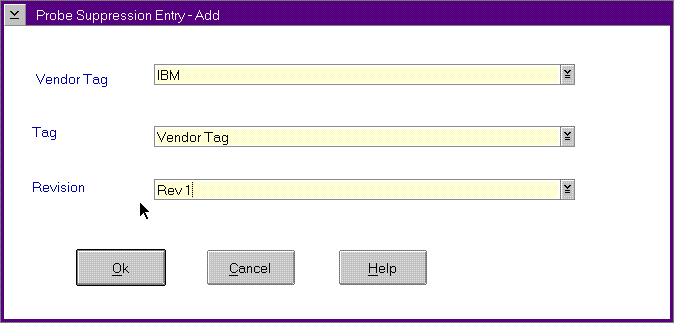

Probe Suppression Entry Window (Add or Change Functions)
The Probe Suppression Entry window (Probe Suppression Entry - Add Window)
appears when you select the Add or Change push buttons from the FFST Setup
window. This window uses the DMI triplet for your product to control an
entire group of calls to FFSTProbe within your product. Specifically, FFST
uses the following DMI information:
ProbeSuppressionEntry-AddWindow
The
differences among the Add, Change, and Delete screens are:
Add
Title bar reads "FFST - Probe Suppression -
Add", and all fields are empty. You can add required information.
Change
Title bar reads "FFST - Probe Suppression - Change",
and all fields contain information about the selected entry. You can change
required information.
You can click the list box selector that is located on the right side of
each entry area or enter the information directly. When you click on the
list box selector, all values currently stored in the PCT will be displayed.
You can select the desired item from the list.
Delete
Used to delete a group of probes from Probe Suppression.
This will enable information logging when calling FFSTProbe for these probes.
The system will request a confirmation that you want to delete suppression.
[Back: Probe-Suppression Entry Summary Area]
[Next: Probe Control Table]